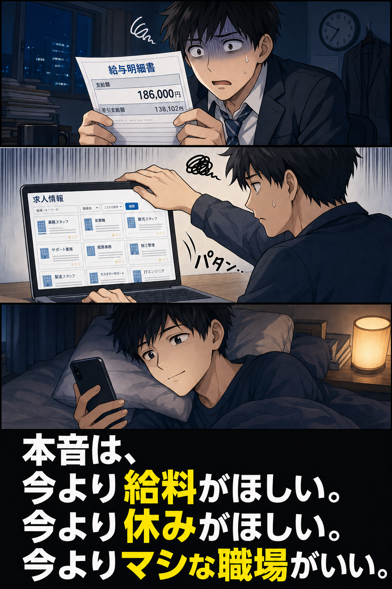
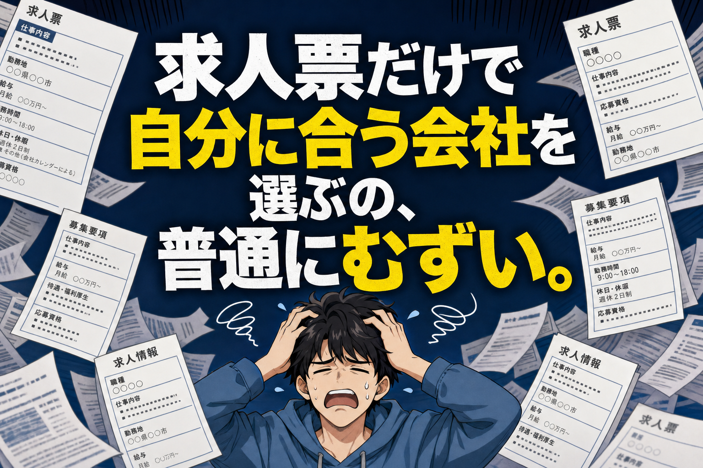
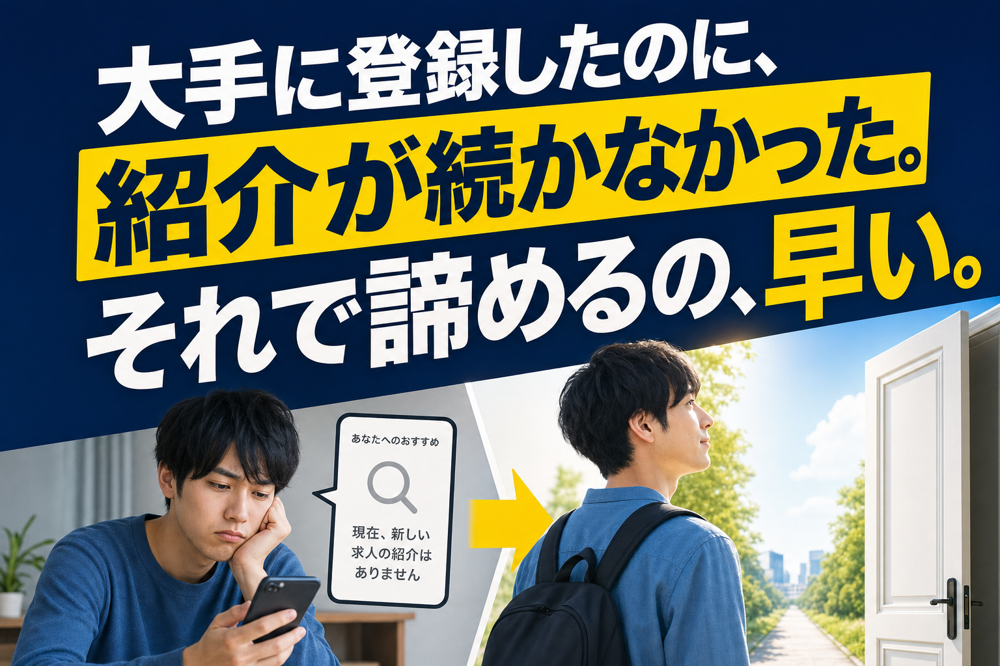
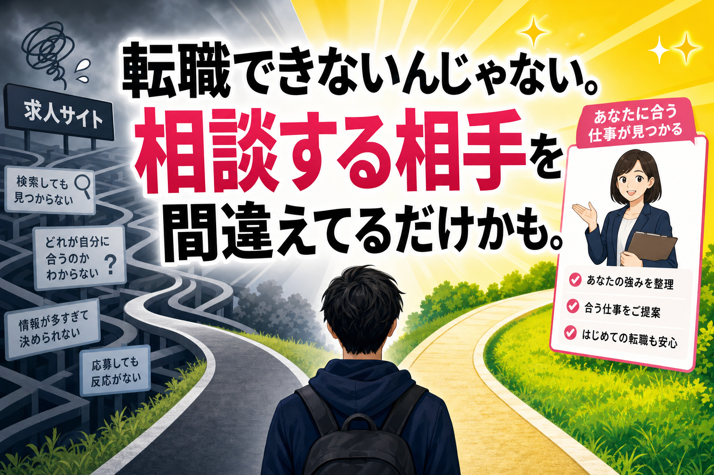
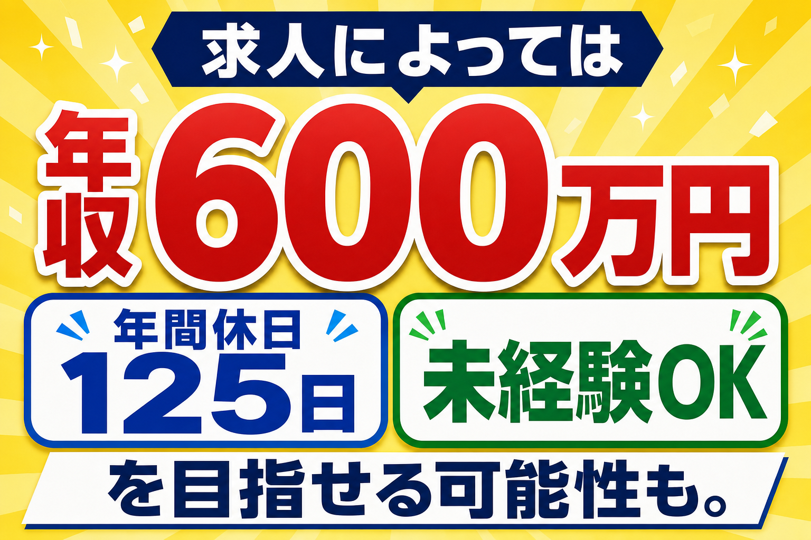
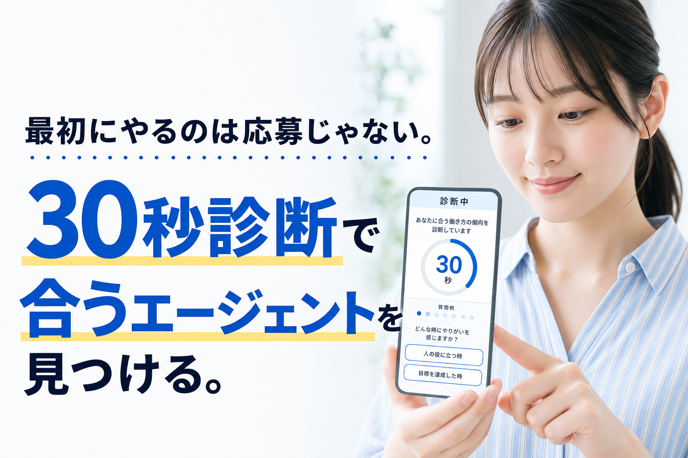
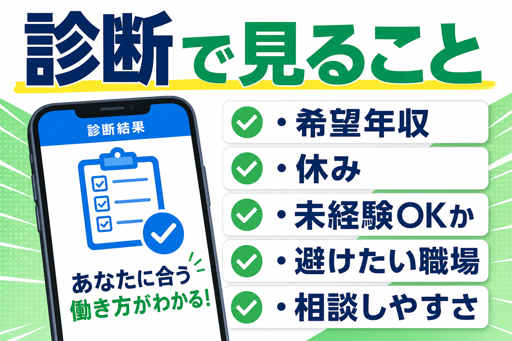
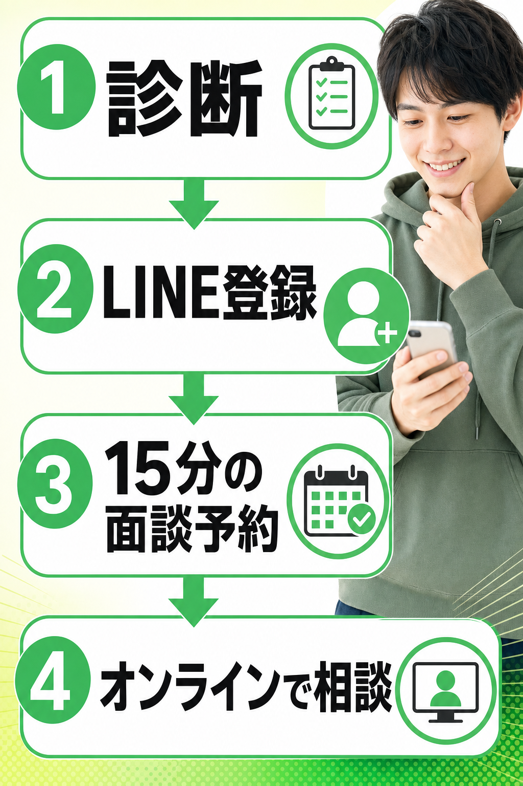
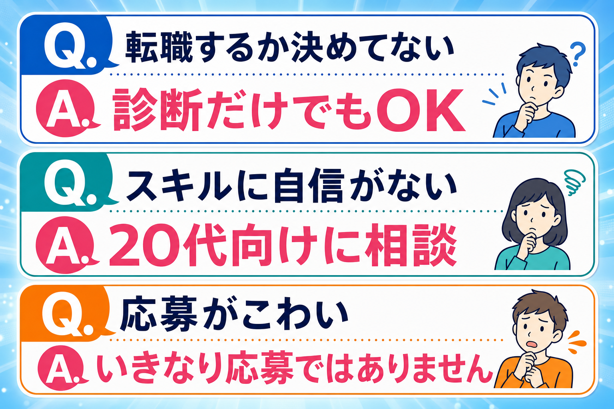
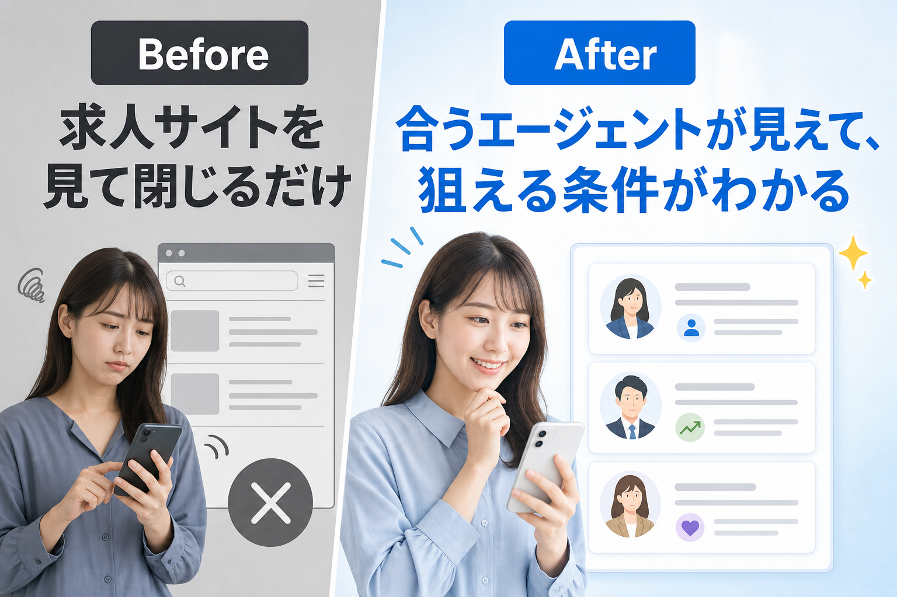

給料は低い。
でも転職活動はめんどくさい。
求人サイトを開いても、どれが自分向きかわからない。
それで結局、また同じ毎日に戻る。

高望みしたいわけじゃない。
ただ、今のまま終わるのがイヤなだけ。
この気持ちがあるなら、最初にやることは求人応募ではありません。

未経験OK。若手歓迎。働きやすい環境。
そう書いてあっても、自分が応募していいのかは分からない。
残業や人間関係も、求人票だけでは見えにくい。

エージェントに登録したのに、思ったより紹介が来ない。
希望とズレた求人ばかり。担当者と合わない。
そこで「自分は無理」と思うのは、まだ早いです。

20代転職で大事なのは、求人を片っ端から見ることではありません。
先に、自分に合うエージェントを見つけること。
ここを外すと、転職活動は一気にしんどくなります。
もちろん、全員が同じ条件を狙えるわけではありません。
でも20代のうちは、未経験・第二新卒として相談できる求人が見つかる可能性があります。

ここで大事なのは、自分だけで探さないこと。
条件のいい求人ほど、どこに相談するかで見え方が変わります。
たとえば、こんな生活。
連休に旅行。
今よりいい部屋。
友達とのご飯。
欲しかった服。
ちゃんと貯金。
求人によっては、家賃補助みたいな条件を相談できる場合もあります。
「自分もこうなりたい」
そう思ったら、次に見るべきは求人サイトではありません。

出会えるエージェントは、希望条件をもとに、相性のよいエージェントを探す入口です。
いきなり履歴書。いきなり面接。いきなり応募。
そういう話ではありません。
自分に合う仕事。
避けたい職場。
希望する年収や休み。
こういう条件って、応募先にいきなり言いにくいですよね。
でもエージェントなら、先に希望を伝えたうえで、合いそうなエージェントを絞れます。
しかも利用料は完全無料。まず見るだけのハードルが低いです。

診断は、あなたに合う仕事やエージェントを考えるためのものです。
まだ転職を決めていなくても、「今の自分なら何を狙えるか」を見るきっかけになります。

LINE登録後は、スマホで案内を確認しやすくなります。
その後、15分ほどの面談予約へ。オンラインで相談できます。
忙しくても、いきなり長時間の転職活動を始める必要はありません。

転職を決めてから動く必要はありません。
むしろ、決める前に「自分に合うエージェント」を知っておく方がラクです。
求人サイトを眺めて落ち込むより、まずは30秒だけ。

何も決めなくていい。
いきなり応募しなくていい。
まずは、手取り18万のまま終わらない可能性を見にいく。
そのくらいの一歩でいいです。
20代なら、今の条件を見直せる可能性があります。
求人サイトを閉じる前に、まずは30秒だけ。
転職するか決めていなくても大丈夫です。診断後の流れはLINEで確認できます。いきなり応募ではありません。